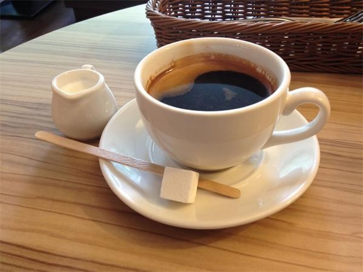

来杯Coffee？

咖啡是世界三大饮料之一，是用经过烘焙的咖啡豆制作出来的饮料，与可可、茶同为流行于世界的主要饮品。 咖啡树是属茜草科多年生常绿灌木或小乔木，日常饮用的咖啡是用咖啡豆配合各种不同的烹煮器具制作出来的， 而咖啡豆就是指咖啡树果实里面的果仁，再用适当的方法烘焙而成，一杯标准的咖啡品尝起来的味道不应该是苦涩的， 一名合格的咖啡师在制作咖啡时会严谨地进行每一步操作，最后为客人呈上的咖啡在味觉上会呈现出不同程度的甜度、酸度、醇厚度或是干净度。